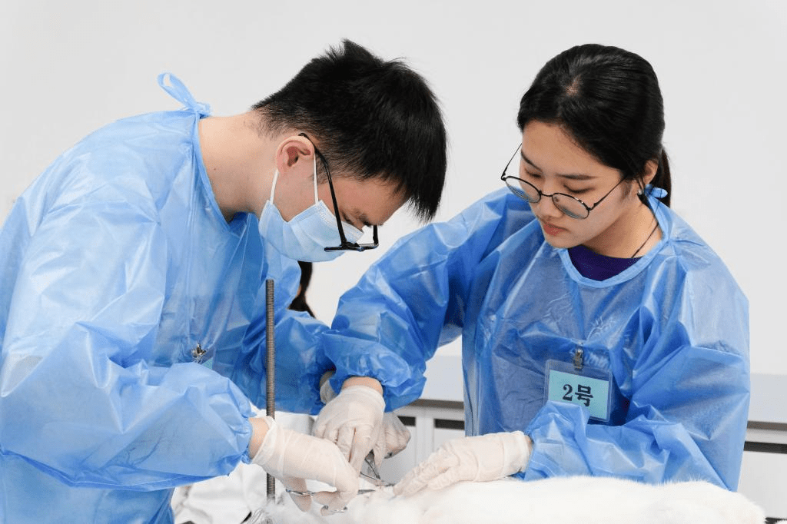

News Details
Our school held the second Animal Basic Skills Competition
(Correspondents: Wu Jiali, Yuan Guxin, Lin Han Photography: Lu Mengyang, Liu Jiarong, Jiao Xinyi, Zhan Wenxi) On the morning of May 21, the second Animal Basic Skills Competition of our school was held in the fourth comprehensive building. The hands-on ability of basic experiments can improve students' professional skills, promote learning, training and teaching skills through competitions. Liu Zhen, Director of the Practical Teaching Management Office of the Undergraduate School, Li Jiakui, Deputy Dean of our academy, Animal Physiology teacher team, counselors Wang Yujun, Gao Hongming and contestants attended the opening ceremony.
This competition examines the students' experimental operation ability through the neurohumoral regulation experiment of cardiovascular activity. The neurohumoral regulation experiment of cardiovascular activity includes a number of experimental basic operations and covers various physiological knowledge points. It is a comprehensive and professional experiment. The experiment is divided into three parts: anesthesia and fixation of rabbits, surgical treatment of rabbits, observation and recording of experimental data. Among them, the surgical treatment of rabbits includes separation of the common carotid artery, separation of the cervical nerves, and arterial cannulation.
Liu Zhen is speaking

The full view of the opening ceremony
At the opening ceremony, Li Jiakui emphasized the importance of basic technical operations for the animal experiments, and hoped that students can study basic subjects earnestly such as physiology and aspire to become the talents who can solve practical production problems in the industry. Liu Zhen said that our school continues to innovate the talent training model, deepen the reform of talent training, focus on cultivating students' "one sense and three strengths", and build the "111" competition system. He encourages students to play the "three innovations" spirit, master The "housekeeping skills" in the field of Animal science and Veterinary medicine,Actively participate in domestic and foreign subject professional competitions or innovation competitions, and improve independent learning ability, practical innovation ability and global competence in the competition.
Dingtang Li, an undergraduate, is the first author. Professor Dongmei Chen and Professor Shuyu Xie are the co-corresponding authors. Some of other students in the research group participated in the work. The research was funded by the National Key Research and Development Program and Huazhong Agricultural University College Students' Innovation and Entrepreneurship Project.
After Xu Zaiyan, the chief referee of the competition, read out the competition process and relevant rules, the competition officially started.
The contestants of each group who passed the screening layer by layer have mastered the operation steps of various experiments, and they can also be calm in face of sudden problems, which fully demonstrates the outstanding demeanor of students.
The contestants conducted rabbit experiments

The contestants conducted the carotid artery
The contestants conducted the fixation of rabbit

The contestants conducted the experimental operation
The members of the seventh group made plans and division of labor in advance. Zhao Huiyu was in charge of controlling the overall situation of the experiment; Duan Jialin assisted in preparing the experimental materials; Wen Xianyu was in charge of computer operation and experimental data processing. The members of the group cooperated tacitly, considered various factors of the experiment comprehensively, and avoided risks in order to optimize the results of the competition reasonably. When the vagus nerve was stimulated, the experimental phenomenon failed to reach the expected level. In order to ensure sufficient experimental time, the members of the seven groups made a decisive decision and chose to discard this part of the experimental score to minimize the experimental deduction. In the end, the members of the seventh group won the second prize of this competition for their outstanding performance.
On the operating table of the sixth group, Du Jiahe, the chief surgeon, successfully completed the key step of separating the cervical nerve with the assistance of team member Yang Zhiyuan. Wang Ziyi performed operations such as ligation and fixation in a timely manner to promote the smooth progress of the experiment. However, due to the poor contact of computer equipment, the members of the sixth group wasted a lot of time in the process of observing the experimental results, and fell behind helplessly. Wang Ziyi said with emotion: "Even if I have made sufficient preparations before the competition, it is still a little rusty when I actually start the experimental operation."
After the competition, Xu Zaiyan commented that the deduction of points in this competition focused on the details of the experimental operation, and emphasized the importance of cultivating good experimental habits, strengthening the awareness of teamwork, and continuously improving basic professional skills.